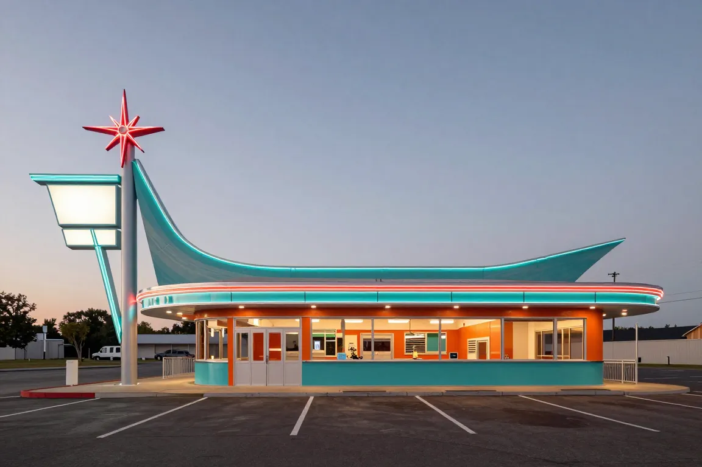

architecture · 1940s–1970s · also: Populuxe architecture, Coffee-shop modern
The roadside style of the American car age. Coffee shops, motels and car washes got upswept roofs, bright signs and space-age shapes to catch a driver at speed.

Core thesis
A roadside building must be a sign: it must show a driver at 50 km/h what it sells and why it is new.
Design principles
Lift the roof in a bold slope or a fold so that it reads from the road.
Tie the sign to the building and make it as big as the roof.
Use space-age forms such as boomerangs, starbursts, atoms and saucers.
Fill the front with glass so that the interior is the show.
Cantilever the roof past the walls to give a feeling of flight.
Use bright colour and neon so that the building works at night.